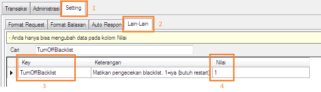

Turn Off Blacklist
Sejak dirilis versi 3.3.6 terdapat fitur blacklist dimana berguna diantaranya mem-blacklist nomor secara otomatis bilamana transaksi gagal sekian kali. Fitur ini pada suatu kondisi tertentu terkadang butuh dimatikan. Mulai versi 3.9.0, kini fitur tersebut dapat dimatikan.
Berikut ini langkah mematikan fitur blacklist:
- Pastikan Anda mempunyai OtomaX, kalau belum klik disini.
- Pastikan telah menggunakan OtomaX versi 3.9.0 atau lebih tinggi, kalau belum update dulu klik disini.
-
Klik menu Setting -> Lain - Lain Cari key: TurnOffBlacklist dan kemudian pada kolom Nilai isi: 1 -> klik tombol Simpan.

- Restart Komputer Anda.
- Selesai.
Selanjutnya apabila Anda mempunyai pertanyaan seputar fitur diatas silahkan kirim ke alamat email support@otomax-software.com.